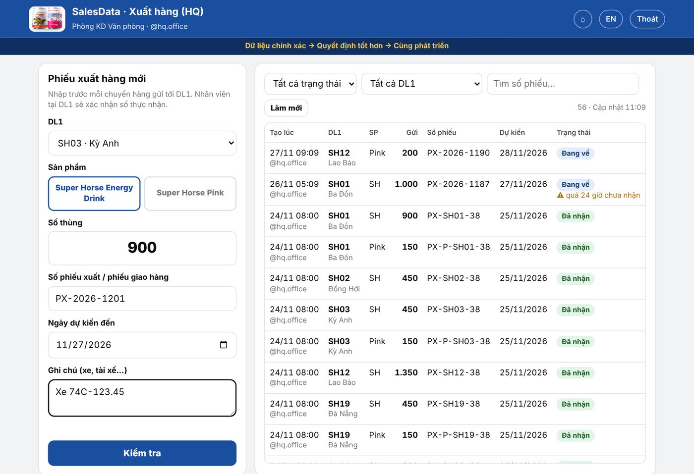
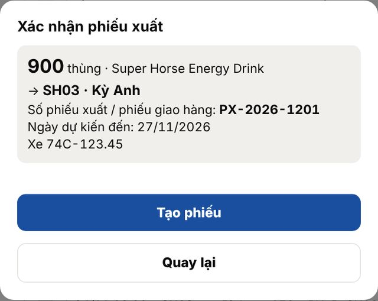

Nhập phiếu xuất hàng cho DL1Entering dispatches to DL1s
Bạn nhập trước mỗi chuyến hàng gửi tới đại lý cấp 1. Nhân viên tại DL1 xác nhận số thực nhận — đây là điểm bắt đầu của mọi thùng hàng trong kho DL1. You enter each delivery to a DL1 distributor before it leaves. The employee at the DL1 confirms what actually arrived; this is where every box in DL1 stock starts.
1Quy trìnhHow it works
Đăng nhập tại hq.html (hoặc từ trang chủ portal.html) bằng tên đăng nhập và PIN. Tài khoản phải có vai trò Văn phòng HQ. Dùng tốt trên máy tính.Log in at hq.html (or from the home page portal.html) with your username and PIN. Your account needs the HQ office role. Works best on a computer.
2Tạo phiếu xuất mớiCreate a new dispatch
- Chọn DL1Choose the DL1
- Chọn sản phẩmChoose the productSuper Horse Energy Drink hoặc Super Horse Pink. Mỗi sản phẩm một phiếu.Super Horse Energy Drink or Super Horse Pink. One dispatch per product.
- Nhập số thùngEnter the boxes1–20.000.1–20,000.
- Nhập số phiếu xuất / phiếu giao hàngEnter the dispatch / delivery note numberBắt buộc, không trùng với phiếu khác của cùng sản phẩm — tránh nhập hai lần.Required and must not repeat for the same product, which stops double entry.
- Ngày dự kiến đến và ghi chúExpected arrival and noteGhi chú tùy chọn: xe, tài xế…Note is optional: truck, driver…
- Bấm Kiểm tra → Tạo phiếuTap Review → Create dispatchKiểm tra lại DL1 và số thùng trên màn hình xác nhận.Double-check the DL1 and boxes on the confirm screen.


3Theo dõi trạng tháiFollowing the status
Danh sách bên dưới lọc được theo trạng thái, DL1 và số phiếu.The list below filters by status, DL1 and note number.
| Trạng tháiStatus | Nghĩa làMeans |
|---|---|
| Đang vềOn the way | Chưa được DL1 xác nhận. Sau 24 giờ hiện ⚠ "quá 24 giờ chưa nhận" — hãy gọi DL1.Not yet confirmed by the DL1. After 24 hours a ⚠ "not received after 24 h" appears; call the DL1. |
| Đã nhậnReceived | Nhận đủ số thùng.Received in full. |
| Nhận thiếu / Nhận dưReceived short / over | Số thực nhận khác phiếu. Cột Ghi chú cho biết lý do nhân viên ghi. Kho DL1 tăng theo số thực nhận.The received quantity differs. The Note column shows the employee's reason. DL1 stock goes up by the received quantity. |
| Đã hủyCancelled | Phiếu đã hủy, không ảnh hưởng kho.Cancelled; no effect on stock. |
4Hủy phiếuCancelling a dispatch
Chỉ hủy được phiếu Đang về (chưa nhận). Bấm Hủy trên dòng đó và ghi lý do (bắt buộc). Nếu nhập sai, hủy rồi tạo phiếu đúng. Only dispatches that are On the way (not yet received) can be cancelled. Tap Cancel on that row and give a reason (required). If you entered something wrong, cancel it and create the correct one.
Phiếu đã nhận không hủy được. Nếu số đã nhận bị sai, nhân viên DL1 sửa bằng kiểm kê — quản lý duyệt chênh lệch.A received dispatch can't be cancelled. If the received quantity is wrong, the DL1 staff correct it with a stocktake, and the manager approves the difference.